Load libraries
library(haven)
library(psych)
library(tidyverse)
library(lavaan)
library(semTools)
library(manymome)Multiple Regression and Beyond (3e) by Timothy Z. Keith
library(haven)
library(psych)
library(tidyverse)
library(lavaan)
library(semTools)
library(manymome)Linear model: \(y = a \cdot x + b + \epsilon\), \(\epsilon\): errors
Errors의 소스들:
Gaussian/Normal distribution
\(X \sim N(\mu, \sigma^2)\), density function: \(\displaystyle f(x) = \frac{1}{\sqrt{2\pi}\sigma} e^{-\frac{1}{2}(\frac{x-\mu}{\sigma})^2}\)
\(X \sim N(0, 1)\): \(\displaystyle f(x) = \frac{1}{\sqrt{2\pi}} e^{-\frac{1}{2}x^2}\), (standard normal distribution)
예를 들어, 1000명의 사람들이 각자 16번의 동전 던지기를 시행하면서 좌우로 움직인다면,
# A tibble: 1,000 × 16
V1 V2 V3 V4 V5 V6 V7 V8 V9 V10 V11 V12 V13 V14
<dbl> <dbl> <dbl> <dbl> <dbl> <dbl> <dbl> <dbl> <dbl> <dbl> <dbl> <dbl> <dbl> <dbl>
1 1 1 -1 -1 -1 -1 -1 1 -1 -1 -1 -1 -1 1
2 1 1 -1 1 1 1 -1 -1 1 -1 1 -1 1 1
3 -1 -1 1 -1 -1 1 -1 -1 1 -1 -1 -1 -1 -1
4 -1 -1 1 -1 -1 1 1 1 -1 -1 1 -1 -1 -1
5 1 1 1 1 -1 1 -1 1 1 -1 -1 -1 1 1
6 -1 1 -1 1 -1 -1 1 1 1 1 1 1 1 1
7 -1 1 -1 1 1 1 -1 1 1 1 1 -1 1 1
8 1 -1 -1 1 -1 -1 -1 1 -1 -1 -1 1 1 1
9 1 -1 1 -1 1 1 -1 -1 -1 1 -1 1 1 1
10 -1 -1 1 1 -1 1 1 -1 -1 1 -1 1 1 1
# ℹ 990 more rows
# ℹ 2 more variables: V15 <dbl>, V16 <dbl>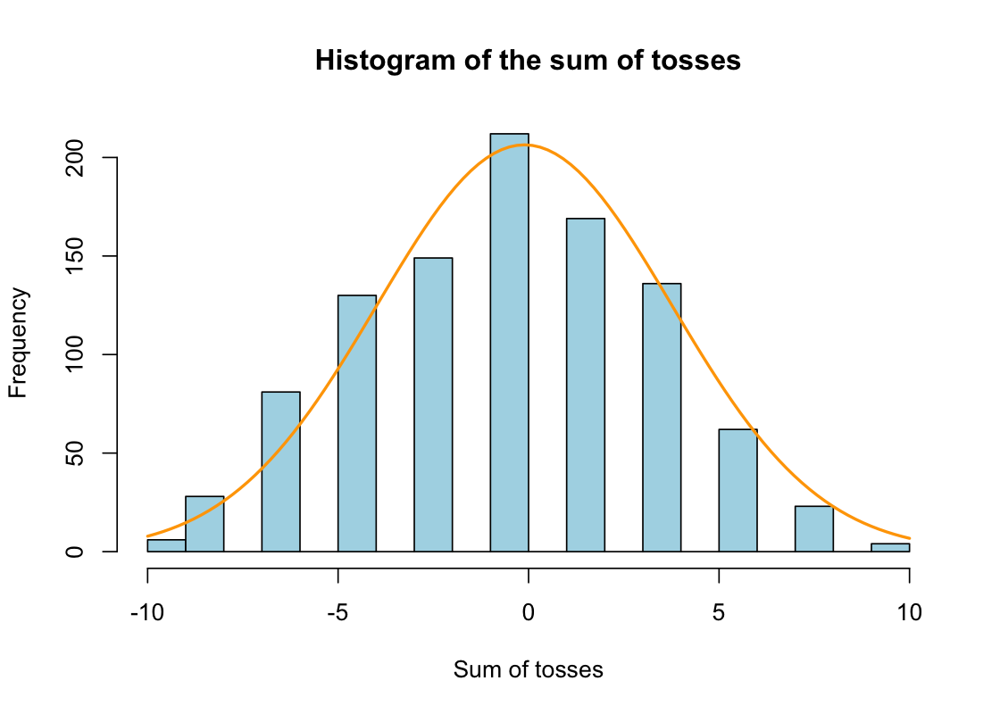
Reliability (신뢰도): 측정이 반복될 때, 얼마나 일관성 있는지
Reliability (신뢰도): \(\displaystyle \rho = \frac{V_{\text{True}}}{V_{\text{Observed}}} = \frac{V_{\text{True}}}{V_{\text{True}} + V_{\text{Error}}}\)
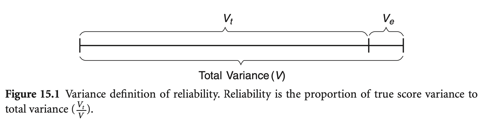
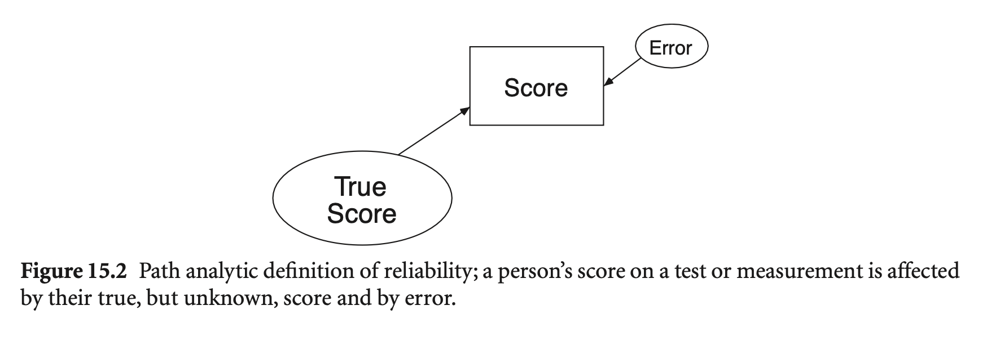
Validity (타당도): 측정이 실제로 측정하고자 하는 것을 얼마나 잘 측정하는지
다음과 같이 독해력을 3가지로 측정하는 예를 생각하면,
추가로 측정하는 능력 각각: unique variance
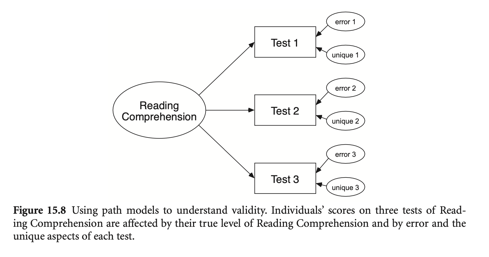
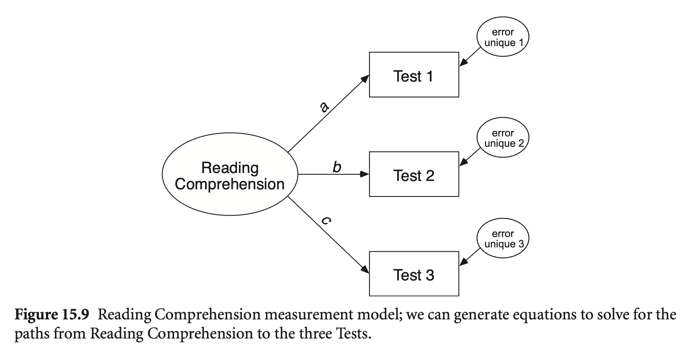
Factor analysis (요인분석): indicators (지표들, manifest variable)의 분산을 공통 분산(common variance)과 고유 분산(unique variance)으로 분해
공통 요인의 값을 구체적으로 구하기 어려움: “factor score indeterminacy”
보통 요인의 개수를 결정하기 위해 탐색적 요인 분석(exploratory factor analysis, EFA)을 사용하며, 요인의 구조를 파악한 후 이를 확인하는 작업으로 확인적 요인 분석(confirmatory factor analysis, CFA)을 사용하지만, 현실적으로는 이 둘을 확실히 구분하기는 어려움.
요인에 개수와 구조는 일반적으로 통계적 접근으로만 결정하기 어려움: 이론적 근거와 함께 고려
예를 들어, 3-indicator, 1-factor 모형을 보면,
\(x_1 = \lambda_{11} \xi_1 + \delta_1\)
\(x_2 = \lambda_{21} \xi_1 + \delta_2\)
\(x_3 = \lambda_{31} \xi_1 + \delta_3\)
(회귀계수 \(\lambda\): factor loading, 요인부하량)
가정: \(COV(\xi_1, \delta_i) = 0\), \(COV(\delta_i, \delta_j) = 0\)
따라서, \(\mathbf{\Theta_{\delta}} = \begin{bmatrix} V(\delta_1) \\ 0 & V(\delta_2) \\ 0 & 0 & V(\delta_3) \end{bmatrix}\)
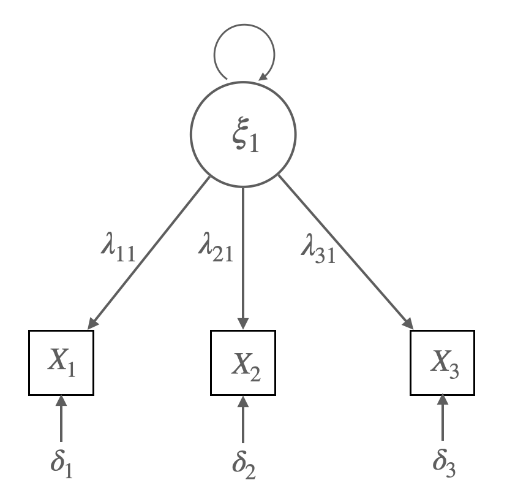
Implied covariance matrix:
\[
\Sigma(\theta) = \begin{bmatrix}
\lambda_{11}^2 V(\xi_1) + V(\delta_1) \\
\lambda_{21} \lambda_{11} V(\xi_1) & \lambda_{21}^2 V(\xi_1) + V(\delta_2) \\
\lambda_{31} \lambda_{11} V(\xi_1) & \lambda_{31} \lambda_{21} V(\xi_1) & \lambda_{31}^2 V(\xi_1) + V(\delta_3)
\end{bmatrix}
\]
Identified되려면, 적어도 한 개의 파라미터를 줄여야 함: 고정하거나 동등하게 설정
앞서 살펴본 homework와 grade의 관계에 대한 모형을 잠재변수를 통해 살펴보면,
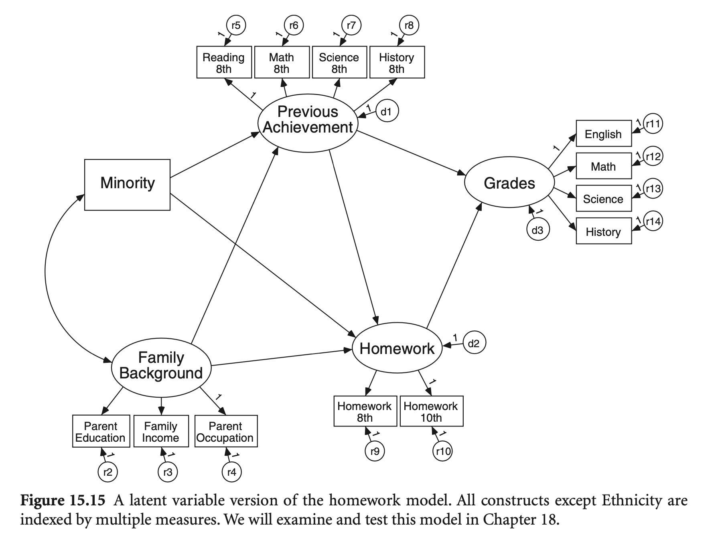
예제: The Differential Ability Scales, Second Edition (DAS-II; Elliott, 2007)
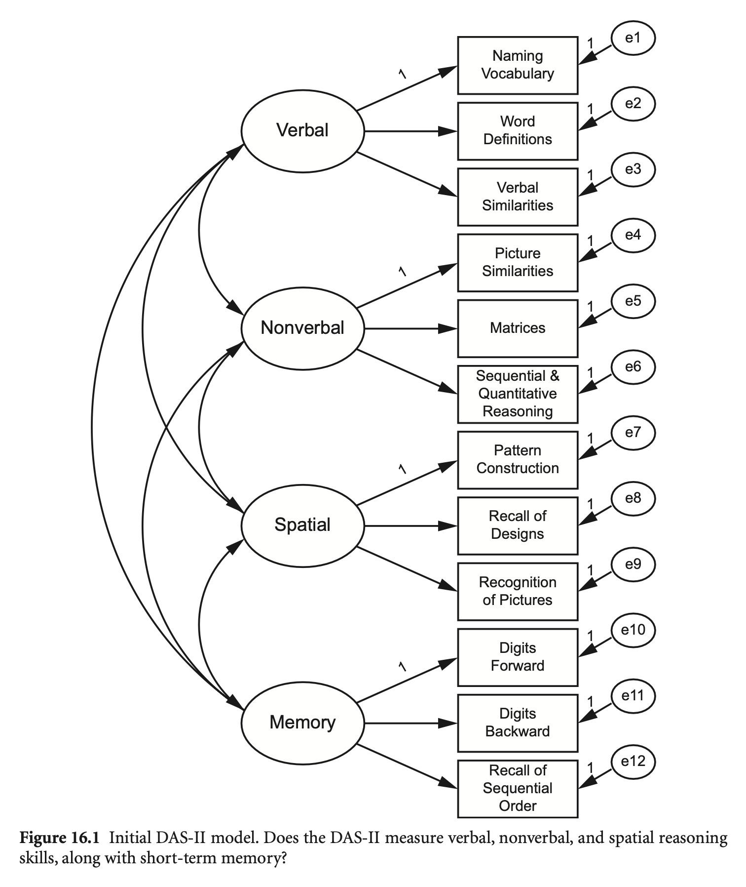
das2 <- haven::read_sav("data/chap 16 CFA 1/das 2 cov.sav")
das2cov <- das2[1:12, 3:14] |>
as.matrix() |>
lav_matrix_vechr(diagonal = TRUE) |>
getCov(names = c("wdss", "vsss", "sqss", "soss", "rpss", "rdss", "psss", "pcss", "nvss", "mass", "dfss", "dbss"))Unit-loading identification (ULI)
NA 사용하여 free the first parameter'f1 =~ NA*x1 + 1*x2'Unit-variance identification (UVI)
'f1 =~ NA*x1 + x2 + x3
f1 ~~ 1*f1'std.lv, std.all, std.nox
std.lv: latent variable만 표준화, 즉 위와 같이 factor의 분산을 1로 설정std.all: latent와 indicator 모두 표준화summary(model, standardized="TRUE") # 또는 type을 지정
standardizedSolution(fit, type="...")Effect codings
'f1 =~ a*x1 + b*x2 + c*x3
a + b + c == 3' # constraintDAS-II 모형의 CFA:
das2_model <- '
Verbal =~ nvss + wdss + vsss
Nonverbal =~ psss + mass + sqss
Spatial =~ pcss + rdss + rpss
Memory =~ dfss + dbss + soss
'
fit <- sem(das2_model, sample.cov = das2cov, sample.nobs = 800)
summary(fit, standardized = TRUE, fit.measures = TRUE, rsquare = TRUE) |> print()lavaan 0.6-19 ended normally after 164 iterations
Estimator ML
Optimization method NLMINB
Number of model parameters 30
Number of observations 800
Model Test User Model:
Test statistic 127.986
Degrees of freedom 48
P-value (Chi-square) 0.000
Model Test Baseline Model:
Test statistic 4335.087
Degrees of freedom 66
P-value 0.000
User Model versus Baseline Model:
Comparative Fit Index (CFI) 0.981
Tucker-Lewis Index (TLI) 0.974
Loglikelihood and Information Criteria:
Loglikelihood user model (H0) -33708.567
Loglikelihood unrestricted model (H1) -33644.574
Akaike (AIC) 67477.134
Bayesian (BIC) 67617.673
Sample-size adjusted Bayesian (SABIC) 67522.406
Root Mean Square Error of Approximation:
RMSEA 0.046
90 Percent confidence interval - lower 0.036
90 Percent confidence interval - upper 0.055
P-value H_0: RMSEA <= 0.050 0.762
P-value H_0: RMSEA >= 0.080 0.000
Standardized Root Mean Square Residual:
SRMR 0.027
Parameter Estimates:
Standard errors Standard
Information Expected
Information saturated (h1) model Structured
Latent Variables:
Estimate Std.Err z-value P(>|z|) Std.lv Std.all
Verbal =~
nvss 1.000 7.463 0.739
wdss 0.942 0.049 19.266 0.000 7.029 0.733
vsss 1.100 0.053 20.900 0.000 8.207 0.805
Nonverbal =~
psss 1.000 5.570 0.541
mass 1.306 0.093 14.104 0.000 7.273 0.710
sqss 1.406 0.094 15.030 0.000 7.831 0.808
Spatial =~
pcss 1.000 7.499 0.814
rdss 0.982 0.047 20.996 0.000 7.365 0.737
rpss 0.795 0.049 16.388 0.000 5.961 0.591
Memory =~
dfss 1.000 7.387 0.669
dbss 1.035 0.058 17.961 0.000 7.643 0.754
soss 1.119 0.061 18.392 0.000 8.265 0.778
Covariances:
Estimate Std.Err z-value P(>|z|) Std.lv Std.all
Verbal ~~
Nonverbal 33.464 3.077 10.875 0.000 0.805 0.805
Spatial 42.028 3.283 12.801 0.000 0.751 0.751
Memory 45.428 3.691 12.309 0.000 0.824 0.824
Nonverbal ~~
Spatial 37.267 3.202 11.638 0.000 0.892 0.892
Memory 35.230 3.285 10.724 0.000 0.856 0.856
Spatial ~~
Memory 44.873 3.539 12.680 0.000 0.810 0.810
Variances:
Estimate Std.Err z-value P(>|z|) Std.lv Std.all
.nvss 46.169 2.923 15.793 0.000 46.169 0.453
.wdss 42.471 2.663 15.949 0.000 42.471 0.462
.vsss 36.520 2.709 13.482 0.000 36.520 0.352
.psss 74.838 4.000 18.711 0.000 74.838 0.707
.mass 51.973 3.120 16.657 0.000 51.973 0.496
.sqss 32.554 2.475 13.154 0.000 32.554 0.347
.pcss 28.663 2.240 12.794 0.000 28.663 0.338
.rdss 45.628 2.886 15.808 0.000 45.628 0.457
.rpss 66.343 3.650 18.177 0.000 66.343 0.651
.dfss 67.275 3.897 17.263 0.000 67.275 0.552
.dbss 44.461 2.880 15.440 0.000 44.461 0.432
.soss 44.555 3.050 14.609 0.000 44.555 0.395
Verbal 55.704 4.882 11.410 0.000 1.000 1.000
Nonverbal 31.029 4.002 7.754 0.000 1.000 1.000
Spatial 56.231 4.351 12.925 0.000 1.000 1.000
Memory 54.573 5.447 10.018 0.000 1.000 1.000
R-Square:
Estimate
nvss 0.547
wdss 0.538
vsss 0.648
psss 0.293
mass 0.504
sqss 0.653
pcss 0.662
rdss 0.543
rpss 0.349
dfss 0.448
dbss 0.568
soss 0.605
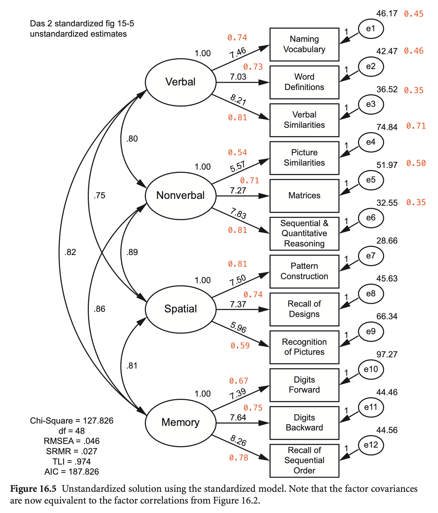
이상적으로 요인이 지표들을 50% 이상 설명해 주기를 바람: \(R^2 > 0.5\)
좀 더 느슨하게는 average variance extracted (AVE)가 0.5 이상이면 좋음.
semTools::AVE(fit)
# Verbal Nonverbal Spatial Memory
# 0.579 0.477 0.509 0.537 Composite reliability에 대한 참고: pp. 239-241, Kline(2023)
# Cronbach's alpha: uni-dimensional, tau-equivalent reliabiliy; factor loading을 동일하게 설정/가정
semTools::compRelSEM(fit, tau.eq = TRUE, obs.var = TRUE)
# Verbal Nonverbal Spatial Memory
# 0.804 0.713 0.754 0.776
# Cofficient omega: a model-based alternative; permit covariances among the indicators
semTools::compRelSEM(fit) # tau.eq = FALSE
# Verbal Nonverbal Spatial Memory
# 0.804 0.737 0.753 0.776 \(\displaystyle\omega = \frac{(\sum \lambda_i)^2 \cdot \phi}{(\sum \lambda_i)^2 \cdot \phi + \sum \theta_{ii}}\), \(\phi\): factor variance, \(\theta_{ii}\): error variance
# Composite reliability
semTools::reliability(fit) # depricated
# Verbal Nonverbal Spatial Memory
# alpha 0.804 0.713 0.754 0.776
# omega 0.805 0.728 0.755 0.776
# omega2 0.805 0.728 0.755 0.776
# omega3 0.804 0.737 0.753 0.776
# avevar 0.579 0.477 0.509 0.537Cronbach’s alpha: psych::alpha()
# implied covariance matrix
fitted(fit)$cov |> round(2) |> print() nvss wdss vsss psss mass sqss pcss rdss rpss dfss dbss soss
nvss 101.87
wdss 52.46 91.88
vsss 61.25 57.69 103.87
psss 33.46 31.52 36.80 105.87
mass 43.69 41.15 48.04 40.51 104.87
sqss 47.05 44.31 51.73 43.62 56.96 93.88
pcss 42.03 39.58 46.21 37.27 48.66 52.39 84.89
rdss 41.28 38.88 45.39 36.60 47.79 51.46 55.23 99.87
rpss 33.41 31.46 36.73 29.62 38.68 41.65 44.70 43.90 101.87
dfss 45.43 42.79 49.95 35.23 46.00 49.53 44.87 44.07 35.67 121.85
dbss 47.00 44.27 51.68 36.45 47.59 51.24 46.42 45.60 36.90 56.46 102.87
soss 50.82 47.87 55.88 39.41 51.46 55.41 50.20 49.31 39.90 61.05 63.16 112.86# implied correlation matrix
inspect(fit, "cor.ov") |> print()
# cor.ov: observed variables only
# cor.lv: latent variables only
# cor.all: all variables nvss wdss vsss psss mass sqss pcss rdss rpss dfss dbss soss
nvss 1.000
wdss 0.542 1.000
vsss 0.595 0.591 1.000
psss 0.322 0.320 0.351 1.000
mass 0.423 0.419 0.460 0.384 1.000
sqss 0.481 0.477 0.524 0.438 0.574 1.000
pcss 0.452 0.448 0.492 0.393 0.516 0.587 1.000
rdss 0.409 0.406 0.446 0.356 0.467 0.531 0.600 1.000
rpss 0.328 0.325 0.357 0.285 0.374 0.426 0.481 0.435 1.000
dfss 0.408 0.404 0.444 0.310 0.407 0.463 0.441 0.400 0.320 1.000
dbss 0.459 0.455 0.500 0.349 0.458 0.521 0.497 0.450 0.360 0.504 1.000
soss 0.474 0.470 0.516 0.361 0.473 0.538 0.513 0.464 0.372 0.521 0.586 1.000residuals(fit, type = "cor.bentler", summary = FALSE)summary: Logical. If TRUE, show various summaries of the (possibly scaled) residuals.
residuals(fit) |> print()$type
[1] "raw"
$cov
nvss wdss vsss psss mass sqss pcss rdss rpss dfss dbss soss
nvss 0.000
wdss 1.468 0.000
vsss -1.326 0.239 0.000
psss 5.487 5.436 5.151 0.000
mass -3.742 0.796 -0.103 -1.562 0.000
sqss -3.101 -2.363 1.203 -4.672 2.968 0.000
pcss 4.914 -2.630 2.726 1.684 -1.716 1.540 0.000
rdss 2.665 -7.918 -1.445 4.345 -6.843 -1.523 0.700 0.000
rpss 0.550 -3.500 -0.779 4.334 1.272 2.298 -3.749 4.038 0.000
dfss 4.509 1.158 1.983 1.724 -6.048 -2.588 -0.928 1.869 -2.710 0.000
dbss -4.052 -2.318 -0.742 0.506 3.348 1.693 1.517 1.344 1.051 -0.529 0.000
soss 1.112 2.070 -0.953 -2.460 3.471 -1.478 -1.262 -1.368 0.045 0.869 -0.242 0.000
residuals(fit, type="standardized") |> print()$type
[1] "standardized"
$cov
nvss wdss vsss psss mass sqss
nvss 0.000
wdss 1.319 0.000
vsss -1.679 0.298 0.000
psss 2.335 2.371 2.369 0.000
mass -2.044 0.436 -0.063 -0.825 346956626.925
sqss -2.148 -1.658 0.961 -3.801 3.887 121216123.901
pcss 3.200 -1.869 2.113 1.010 -1.427 1.778
rdss 1.391 -4.417 -0.875 2.023 -4.363 -1.315
rpss 0.240 -1.566 -0.369 1.729 0.606 1.418
dfss 2.114 0.568 1.044 0.651 -2.861 -1.546
dbss -2.430 -1.423 -0.512 0.236 1.953 1.292
soss 0.668 1.272 -0.674 -1.127 2.015 -1.177
pcss rdss rpss dfss dbss soss
nvss
wdss
vsss
psss
mass
sqss
pcss 0.000
rdss 1.162 76639007.444
rpss -3.798 2.472 237262015.107
dfss -0.545 0.867 -1.052 162795134.700
dbss 1.155 0.798 0.500 -0.373 88848735.180
soss -0.990 -0.817 0.021 0.635 -0.275 185340208.945
residuals(fit, type = "cor.bollen") |> print()$type
[1] "cor.bollen"
$cov
nvss wdss vsss psss mass sqss pcss rdss rpss dfss dbss soss
nvss 0.000
wdss 0.015 0.000
vsss -0.013 0.002 0.000
psss 0.053 0.055 0.049 0.000
mass -0.036 0.008 -0.001 -0.015 0.000
sqss -0.032 -0.025 0.012 -0.047 0.030 0.000
pcss 0.053 -0.030 0.029 0.018 -0.018 0.017 0.000
rdss 0.026 -0.083 -0.014 0.042 -0.067 -0.016 0.008 0.000
rpss 0.005 -0.036 -0.008 0.042 0.012 0.023 -0.040 0.040 0.000
dfss 0.040 0.011 0.018 0.015 -0.054 -0.024 -0.009 0.017 -0.024 0.000
dbss -0.040 -0.024 -0.007 0.005 0.032 0.017 0.016 0.013 0.010 -0.005 0.000
soss 0.010 0.020 -0.009 -0.023 0.032 -0.014 -0.013 -0.013 0.000 0.007 -0.002 0.000
# 필터링: 절대값이 0.05보다 작은 값은 NA로 대체
resid_cor <- residuals(fit, type = "cor.bollen")$cov
resid_cor[abs(resid_cor) < 0.05] <- NA
resid_cor |> print() nvss wdss vsss psss mass sqss pcss rdss rpss dfss dbss soss
nvss .
wdss NA .
vsss NA NA .
psss 0.053 0.055 NA .
mass NA NA NA NA .
sqss NA NA NA NA NA .
pcss 0.053 NA NA NA NA NA .
rdss NA -0.083 NA NA -0.067 NA NA .
rpss NA NA NA NA NA NA NA NA .
dfss NA NA NA NA -0.054 NA NA NA NA .
dbss NA NA NA NA NA NA NA NA NA NA .
soss NA NA NA NA NA NA NA NA NA NA NA .파라미터를 추가로 추정하여 \(\chi^2\) 값의 변화를 확인
modindices(fit, sort = TRUE, maximum.number = 8) |> print() lhs op rhs mi epc sepc.lv sepc.all sepc.nox
109 mass ~~ sqss 17.701 12.611 12.611 0.307 0.307
48 Nonverbal =~ rdss 14.845 -1.191 -6.635 -0.664 -0.664
54 Spatial =~ wdss 14.410 -0.320 -2.400 -0.250 -0.250
57 Spatial =~ mass 13.497 -0.725 -5.436 -0.531 -0.531
102 psss ~~ sqss 13.490 -8.793 -8.793 -0.178 -0.178
35 Verbal =~ psss 12.725 0.396 2.956 0.287 0.287
123 pcss ~~ rpss 12.675 -8.036 -8.036 -0.184 -0.184
111 mass ~~ rdss 11.561 -7.250 -7.250 -0.149 -0.149# 필터링: MI > 10 이상인 것만 출력
modindices(fit, sort = TRUE) |> subset(mi > 10) |> print() lhs op rhs mi epc sepc.lv sepc.all sepc.nox
109 mass ~~ sqss 17.701 12.611 12.611 0.307 0.307
48 Nonverbal =~ rdss 14.845 -1.191 -6.635 -0.664 -0.664
54 Spatial =~ wdss 14.410 -0.320 -2.400 -0.250 -0.250
57 Spatial =~ mass 13.497 -0.725 -5.436 -0.531 -0.531
102 psss ~~ sqss 13.490 -8.793 -8.793 -0.178 -0.178
35 Verbal =~ psss 12.725 0.396 2.956 0.287 0.287
123 pcss ~~ rpss 12.675 -8.036 -8.036 -0.184 -0.184
111 mass ~~ rdss 11.561 -7.250 -7.250 -0.149 -0.149
87 wdss ~~ rdss 11.198 -6.360 -6.360 -0.144 -0.144# 필터링: operator가 =~인 것, 즉 회귀계수만 출력
modindices(fit, sort = TRUE, maximum.number = 8) |> subset(op == "=~") |> print() lhs op rhs mi epc sepc.lv sepc.all sepc.nox
48 Nonverbal =~ rdss 14.845 -1.191 -6.635 -0.664 -0.664
54 Spatial =~ wdss 14.410 -0.320 -2.400 -0.250 -0.250
57 Spatial =~ mass 13.497 -0.725 -5.436 -0.531 -0.531
35 Verbal =~ psss 12.725 0.396 2.956 0.287 0.287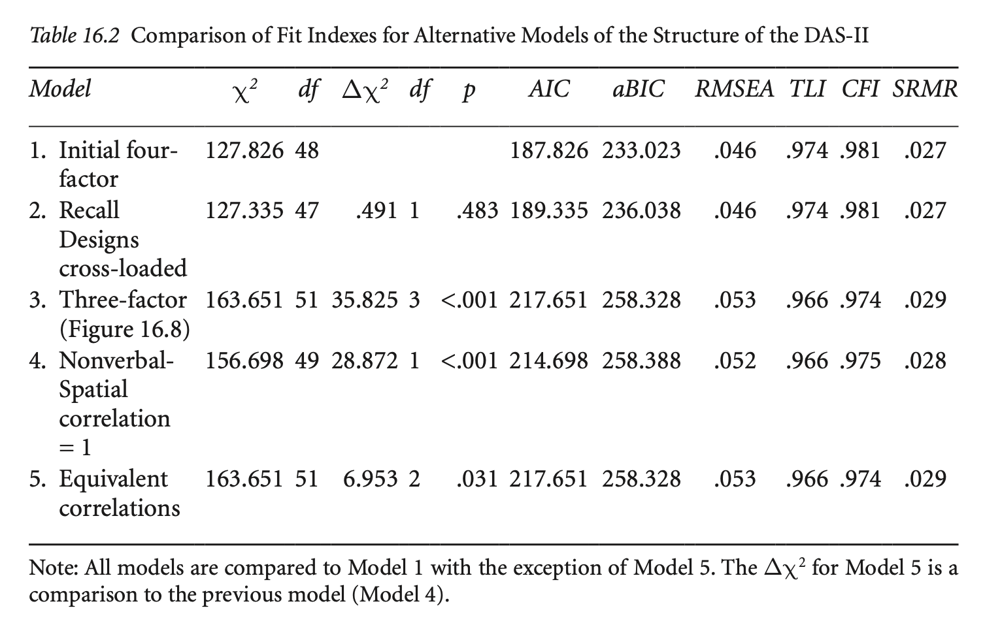
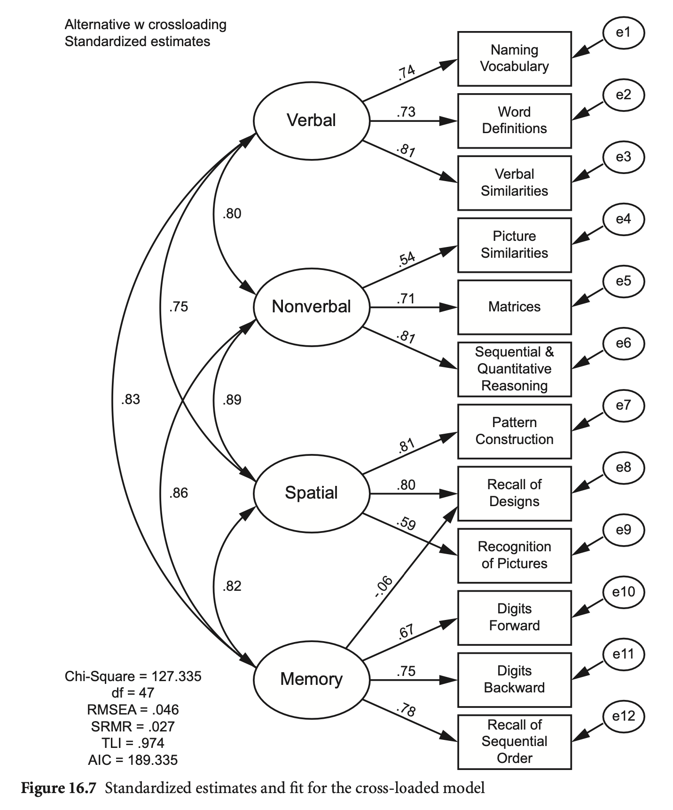
das2_model_crossload <- "
Verbal =~ nvss + wdss + vsss
Nonverbal =~ psss + mass + sqss
Spatial =~ pcss + rdss + rpss
Memory =~ dfss + dbss + soss + rdss
"
fit_crossload <- sem(das2_model_crossload, sample.cov = das2cov, sample.nobs = 800)
summary(fit_crossload, standardized = TRUE, fit.measures = TRUE, rsquare = TRUE) |> print()lavaan 0.6-19 ended normally after 168 iterations
Estimator ML
Optimization method NLMINB
Number of model parameters 31
Number of observations 800
Model Test User Model:
Test statistic 127.495
Degrees of freedom 47
P-value (Chi-square) 0.000
Model Test Baseline Model:
Test statistic 4335.087
Degrees of freedom 66
P-value 0.000
User Model versus Baseline Model:
Comparative Fit Index (CFI) 0.981
Tucker-Lewis Index (TLI) 0.974
Loglikelihood and Information Criteria:
Loglikelihood user model (H0) -33708.321
Loglikelihood unrestricted model (H1) -33644.574
Akaike (AIC) 67478.643
Bayesian (BIC) 67623.866
Sample-size adjusted Bayesian (SABIC) 67525.424
Root Mean Square Error of Approximation:
RMSEA 0.046
90 Percent confidence interval - lower 0.037
90 Percent confidence interval - upper 0.056
P-value H_0: RMSEA <= 0.050 0.725
P-value H_0: RMSEA >= 0.080 0.000
Standardized Root Mean Square Residual:
SRMR 0.027
Parameter Estimates:
Standard errors Standard
Information Expected
Information saturated (h1) model Structured
Latent Variables:
Estimate Std.Err z-value P(>|z|) Std.lv Std.all
Verbal =~
nvss 1.000 7.462 0.739
wdss 0.942 0.049 19.268 0.000 7.031 0.734
vsss 1.100 0.053 20.895 0.000 8.206 0.805
Nonverbal =~
psss 1.000 5.572 0.542
mass 1.305 0.093 14.105 0.000 7.273 0.710
sqss 1.405 0.094 15.030 0.000 7.830 0.808
Spatial =~
pcss 1.000 7.459 0.809
rdss 1.066 0.143 7.457 0.000 7.947 0.795
rpss 0.799 0.049 16.365 0.000 5.959 0.590
Memory =~
dfss 1.000 7.378 0.668
dbss 1.035 0.058 17.941 0.000 7.638 0.753
soss 1.119 0.061 18.372 0.000 8.259 0.777
rdss -0.085 0.134 -0.631 0.528 -0.625 -0.063
Covariances:
Estimate Std.Err z-value P(>|z|) Std.lv Std.all
Verbal ~~
Nonverbal 33.468 3.077 10.876 0.000 0.805 0.805
Spatial 42.014 3.278 12.818 0.000 0.755 0.755
Memory 45.449 3.691 12.312 0.000 0.825 0.825
Nonverbal ~~
Spatial 37.148 3.196 11.624 0.000 0.894 0.894
Memory 35.272 3.288 10.729 0.000 0.858 0.858
Spatial ~~
Memory 45.113 3.565 12.654 0.000 0.820 0.820
Variances:
Estimate Std.Err z-value P(>|z|) Std.lv Std.all
.nvss 46.191 2.924 15.797 0.000 46.191 0.453
.wdss 42.446 2.662 15.945 0.000 42.446 0.462
.vsss 36.524 2.709 13.484 0.000 36.524 0.352
.psss 74.823 3.999 18.708 0.000 74.823 0.707
.mass 51.970 3.121 16.652 0.000 51.970 0.496
.sqss 32.571 2.476 13.153 0.000 32.571 0.347
.pcss 29.264 2.475 11.822 0.000 29.264 0.345
.rdss 44.468 3.433 12.953 0.000 44.468 0.445
.rpss 66.362 3.654 18.160 0.000 66.362 0.651
.dfss 67.407 3.900 17.285 0.000 67.407 0.553
.dbss 44.528 2.879 15.466 0.000 44.528 0.433
.soss 44.648 3.049 14.643 0.000 44.648 0.396
Verbal 55.681 4.881 11.407 0.000 1.000 1.000
Nonverbal 31.044 4.003 7.755 0.000 1.000 1.000
Spatial 55.629 4.457 12.482 0.000 1.000 1.000
Memory 54.441 5.441 10.005 0.000 1.000 1.000
R-Square:
Estimate
nvss 0.547
wdss 0.538
vsss 0.648
psss 0.293
mass 0.504
sqss 0.653
pcss 0.655
rdss 0.555
rpss 0.349
dfss 0.447
dbss 0.567
soss 0.604
이전 모형과 비교하면,
# nested models
lavTestLRT(fit, fit_crossload) |> print()
Chi-Squared Difference Test
Df AIC BIC Chisq Chisq diff RMSEA Df diff Pr(>Chisq)
fit_crossload 47 67479 67624 127.49
fit 48 67477 67618 127.99 0.49144 0 1 0.4833semTools::compareFit(fit, fit_crossload) |> summary()################### Nested Model Comparison #########################
Chi-Squared Difference Test
Df AIC BIC Chisq Chisq diff RMSEA Df diff Pr(>Chisq)
fit_crossload 47 67479 67624 127.49
fit 48 67477 67618 127.99 0.49144 0 1 0.4833
####################### Model Fit Indices ###########################
chisq df pvalue rmsea cfi tli srmr aic bic
fit_crossload 127.495† 47 .000 .046 .981 .974 .027† 67478.643 67623.866
fit 127.986 48 .000 .046† .981† .974† .027 67477.134† 67617.673†
################## Differences in Fit Indices #######################
df rmsea cfi tli srmr aic bic
fit - fit_crossload 1 -0.001 0 0.001 0 -1.509 -6.193
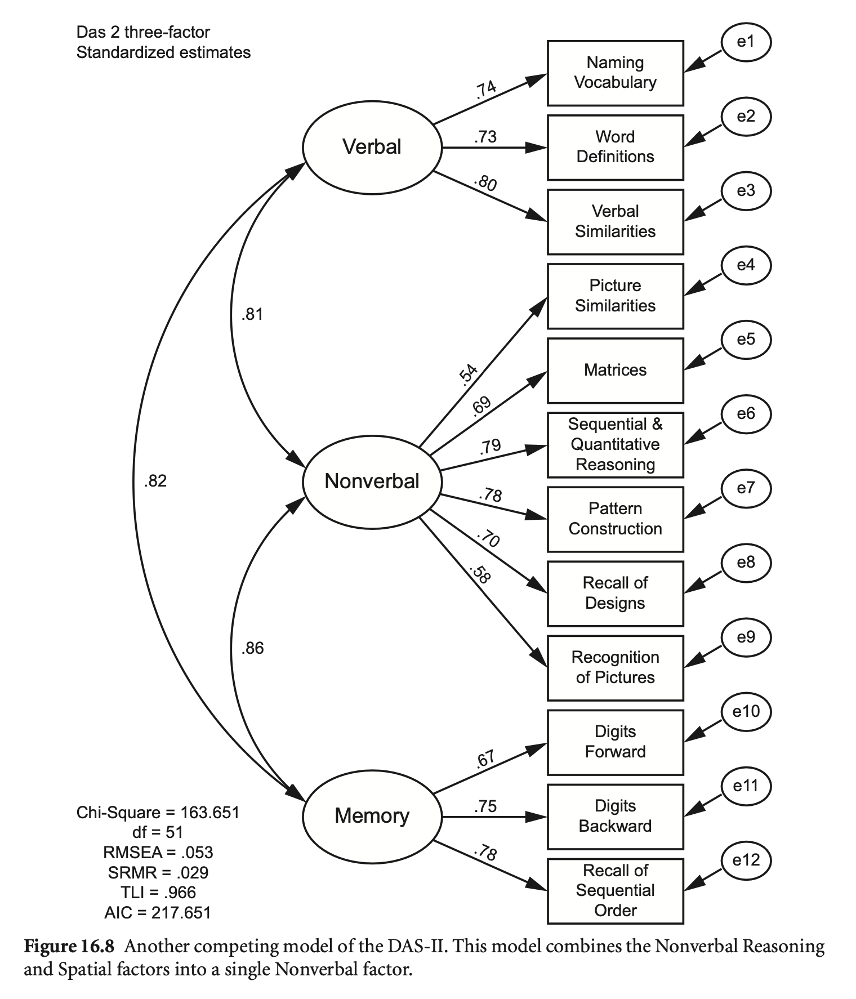
das2_model_3f <- "
Verbal =~ nvss + wdss + vsss
Nonverbal =~ psss + mass + sqss + pcss + rdss + rpss
Memory =~ dfss + dbss + soss
"
fit_3f <- sem(das2_model_3f, sample.cov = das2cov, sample.nobs = 800)
summary(fit_3f, standardized = TRUE, fit.measures = TRUE, rsquare = TRUE) |> print()lavaan 0.6-19 ended normally after 118 iterations
Estimator ML
Optimization method NLMINB
Number of model parameters 27
Number of observations 800
Model Test User Model:
Test statistic 163.856
Degrees of freedom 51
P-value (Chi-square) 0.000
Model Test Baseline Model:
Test statistic 4335.087
Degrees of freedom 66
P-value 0.000
User Model versus Baseline Model:
Comparative Fit Index (CFI) 0.974
Tucker-Lewis Index (TLI) 0.966
Loglikelihood and Information Criteria:
Loglikelihood user model (H0) -33726.502
Loglikelihood unrestricted model (H1) -33644.574
Akaike (AIC) 67507.004
Bayesian (BIC) 67633.489
Sample-size adjusted Bayesian (SABIC) 67547.749
Root Mean Square Error of Approximation:
RMSEA 0.053
90 Percent confidence interval - lower 0.044
90 Percent confidence interval - upper 0.062
P-value H_0: RMSEA <= 0.050 0.304
P-value H_0: RMSEA >= 0.080 0.000
Standardized Root Mean Square Residual:
SRMR 0.029
Parameter Estimates:
Standard errors Standard
Information Expected
Information saturated (h1) model Structured
Latent Variables:
Estimate Std.Err z-value P(>|z|) Std.lv Std.all
Verbal =~
nvss 1.000 7.489 0.742
wdss 0.936 0.049 19.275 0.000 7.012 0.732
vsss 1.095 0.052 20.951 0.000 8.199 0.805
Nonverbal =~
psss 1.000 5.579 0.542
mass 1.258 0.089 14.055 0.000 7.018 0.685
sqss 1.367 0.090 15.158 0.000 7.625 0.787
pcss 1.285 0.085 15.071 0.000 7.169 0.778
rdss 1.249 0.088 14.196 0.000 6.968 0.697
rpss 1.044 0.083 12.615 0.000 5.826 0.577
Memory =~
dfss 1.000 7.398 0.670
dbss 1.033 0.057 17.972 0.000 7.638 0.753
soss 1.117 0.061 18.407 0.000 8.261 0.778
Covariances:
Estimate Std.Err z-value P(>|z|) Std.lv Std.all
Verbal ~~
Nonverbal 33.675 3.044 11.063 0.000 0.806 0.806
Memory 45.656 3.701 12.335 0.000 0.824 0.824
Nonverbal ~~
Memory 35.599 3.266 10.899 0.000 0.862 0.862
Variances:
Estimate Std.Err z-value P(>|z|) Std.lv Std.all
.nvss 45.794 2.913 15.720 0.000 45.794 0.450
.wdss 42.712 2.672 15.987 0.000 42.712 0.465
.vsss 36.642 2.713 13.506 0.000 36.642 0.353
.psss 74.738 3.945 18.945 0.000 74.738 0.706
.mass 55.615 3.135 17.740 0.000 55.615 0.530
.sqss 35.749 2.262 15.808 0.000 35.749 0.381
.pcss 33.501 2.087 16.049 0.000 33.501 0.395
.rdss 51.329 2.919 17.585 0.000 51.329 0.514
.rpss 67.931 3.626 18.733 0.000 67.931 0.667
.dfss 67.121 3.893 17.241 0.000 67.121 0.551
.dbss 44.529 2.884 15.443 0.000 44.529 0.433
.soss 44.616 3.054 14.611 0.000 44.616 0.395
Verbal 56.079 4.893 11.460 0.000 1.000 1.000
Nonverbal 31.130 3.956 7.868 0.000 1.000 1.000
Memory 54.727 5.454 10.034 0.000 1.000 1.000
R-Square:
Estimate
nvss 0.550
wdss 0.535
vsss 0.647
psss 0.294
mass 0.470
sqss 0.619
pcss 0.605
rdss 0.486
rpss 0.333
dfss 0.449
dbss 0.567
soss 0.605
# Compare models
semTools::compareFit(fit, fit_3f) |> summary()################### Nested Model Comparison #########################
Chi-Squared Difference Test
Df AIC BIC Chisq Chisq diff RMSEA Df diff Pr(>Chisq)
fit 48 67477 67618 127.99
fit_3f 51 67507 67633 163.86 35.87 0.11703 3 7.978e-08 ***
---
Signif. codes: 0 ‘***’ 0.001 ‘**’ 0.01 ‘*’ 0.05 ‘.’ 0.1 ‘ ’ 1
####################### Model Fit Indices ###########################
chisq df pvalue rmsea cfi tli srmr aic bic
fit 127.986† 48 .000 .046† .981† .974† .027† 67477.134† 67617.673†
fit_3f 163.856 51 .000 .053 .974 .966 .029 67507.004 67633.489
################## Differences in Fit Indices #######################
df rmsea cfi tli srmr aic bic
fit_3f - fit 3 0.007 -0.008 -0.008 0.002 29.87 15.816
3-factor 모델이 초기 모델에 내포되어 있음을 확인할 수 있음.
das2_model_constrain <- "
# free the first paraemters
Verbal =~ NA*nvss + wdss + vsss
Nonverbal =~ NA*psss + mass + sqss
Spatial =~ NA*pcss + rdss + rpss
Memory =~ NA*dfss + dbss + soss
# unit variance indentification
Verbal ~~ 1*Verbal
Nonverbal ~~ 1*Nonverbal
Spatial ~~ 1*Spatial
Memory ~~ 1*Memory
# equality constraints
Spatial ~~ 1*Nonverbal
Nonverbal ~~ a*Verbal
Spatial ~~ a*Verbal
Nonverbal ~~ b*Memory
Spatial ~~ b*Memory
"
fit_3f_2 <- sem(das2_model_constrain, sample.cov = das2cov, sample.nobs = 800)
summary(fit_3f_2, standardized = TRUE, fit.measures = TRUE) |> print()lavaan 0.6-19 ended normally after 30 iterations
Estimator ML
Optimization method NLMINB
Number of model parameters 29
Number of equality constraints 2
Number of observations 800
Model Test User Model:
Test statistic 163.856
Degrees of freedom 51
P-value (Chi-square) 0.000
Model Test Baseline Model:
Test statistic 4335.087
Degrees of freedom 66
P-value 0.000
User Model versus Baseline Model:
Comparative Fit Index (CFI) 0.974
Tucker-Lewis Index (TLI) 0.966
Loglikelihood and Information Criteria:
Loglikelihood user model (H0) -33726.502
Loglikelihood unrestricted model (H1) -33644.574
Akaike (AIC) 67507.004
Bayesian (BIC) 67633.489
Sample-size adjusted Bayesian (SABIC) 67547.749
Root Mean Square Error of Approximation:
RMSEA 0.053
90 Percent confidence interval - lower 0.044
90 Percent confidence interval - upper 0.062
P-value H_0: RMSEA <= 0.050 0.304
P-value H_0: RMSEA >= 0.080 0.000
Standardized Root Mean Square Residual:
SRMR 0.029
Parameter Estimates:
Standard errors Standard
Information Expected
Information saturated (h1) model Structured
Latent Variables:
Estimate Std.Err z-value P(>|z|) Std.lv Std.all
Verbal =~
nvss 7.489 0.327 22.920 0.000 7.489 0.742
wdss 7.012 0.312 22.489 0.000 7.012 0.732
vsss 8.199 0.320 25.584 0.000 8.199 0.805
Nonverbal =~
psss 5.579 0.355 15.736 0.000 5.579 0.542
mass 7.018 0.333 21.071 0.000 7.018 0.685
sqss 7.625 0.299 25.518 0.000 7.625 0.787
Spatial =~
pcss 7.169 0.286 25.104 0.000 7.169 0.778
rdss 6.968 0.323 21.558 0.000 6.968 0.697
rpss 5.826 0.344 16.960 0.000 5.826 0.577
Memory =~
dfss 7.398 0.369 20.068 0.000 7.398 0.670
dbss 7.638 0.326 23.404 0.000 7.638 0.753
soss 8.261 0.338 24.429 0.000 8.261 0.778
Covariances:
Estimate Std.Err z-value P(>|z|) Std.lv Std.all
Nonverbal ~~
Spatial 1.000 1.000 1.000
Verbal ~~
Nonverbal (a) 0.806 0.021 38.739 0.000 0.806 0.806
Spatial (a) 0.806 0.021 38.739 0.000 0.806 0.806
Nonverbal ~~
Memory (b) 0.862 0.019 45.886 0.000 0.862 0.862
Spatial ~~
Memory (b) 0.862 0.019 45.886 0.000 0.862 0.862
Verbal ~~
Memory 0.824 0.022 36.764 0.000 0.824 0.824
Variances:
Estimate Std.Err z-value P(>|z|) Std.lv Std.all
Verbal 1.000 1.000 1.000
Nonverbal 1.000 1.000 1.000
Spatial 1.000 1.000 1.000
Memory 1.000 1.000 1.000
.nvss 45.794 2.913 15.720 0.000 45.794 0.450
.wdss 42.712 2.672 15.987 0.000 42.712 0.465
.vsss 36.642 2.713 13.506 0.000 36.642 0.353
.psss 74.738 3.945 18.945 0.000 74.738 0.706
.mass 55.615 3.135 17.740 0.000 55.615 0.530
.sqss 35.749 2.262 15.808 0.000 35.749 0.381
.pcss 33.501 2.087 16.049 0.000 33.501 0.395
.rdss 51.329 2.919 17.585 0.000 51.329 0.514
.rpss 67.931 3.626 18.733 0.000 67.931 0.667
.dfss 67.121 3.893 17.241 0.000 67.121 0.551
.dbss 44.529 2.884 15.443 0.000 44.529 0.433
.soss 44.616 3.054 14.611 0.000 44.616 0.395
# Compare models
lavTestLRT(fit_3f, fit_3f_2) |> print()
Chi-Squared Difference Test
Df AIC BIC Chisq Chisq diff RMSEA Df diff Pr(>Chisq)
fit_3f 51 67507 67633 163.86
fit_3f_2 51 67507 67633 163.86 1.387e-09 0 0 modindices(fit_3f, sort = TRUE, maximum.number = 8) |> print() lhs op rhs mi epc sepc.lv sepc.all sepc.nox
93 mass ~~ sqss 26.473 10.256 10.256 0.230 0.230
106 pcss ~~ rdss 26.463 9.511 9.511 0.229 0.229
95 mass ~~ rdss 24.101 -10.817 -10.817 -0.202 -0.202
71 wdss ~~ rdss 15.597 -7.636 -7.636 -0.163 -0.163
111 rdss ~~ rpss 15.509 9.200 9.200 0.156 0.156
31 Verbal =~ psss 9.941 0.323 2.420 0.235 0.235
94 mass ~~ pcss 7.622 -5.266 -5.266 -0.122 -0.122
99 mass ~~ soss 7.343 5.784 5.784 0.116 0.116가령, mass와 rdss의 잔차/오차분산 간의 상관관계를 추정하면,
das2_model_3f_modi <- "
Verbal =~ nvss + wdss + vsss
Nonverbal =~ psss + mass + sqss + pcss + rdss + rpss
Memory =~ dfss + dbss + soss
mass ~~ rdss
"
fit_3f_modi <- sem(das2_model_3f_modi, sample.cov = das2cov, sample.nobs = 800)
parameterEstimates(fit_3f_modi, standardized = "std.all") |> subset(lhs == "mass" | lhs == "rdss") |> print() lhs op rhs est se z pvalue ci.lower ci.upper std.all
13 mass ~~ rdss -10.954 2.110 -5.192 0 -15.089 -6.818 -0.217
18 mass ~~ mass 52.562 3.080 17.066 0 46.526 58.599 0.501
21 rdss ~~ rdss 48.374 2.864 16.889 0 42.760 53.987 0.484anova(fit_3f, fit_3f_modi) |> print()
Chi-Squared Difference Test
Df AIC BIC Chisq Chisq diff RMSEA Df diff Pr(>Chisq)
fit_3f_modi 50 67483 67614 138.09
fit_3f 51 67507 67633 163.86 25.764 0.17594 1 3.858e-07 ***
---
Signif. codes: 0 ‘***’ 0.001 ‘**’ 0.01 ‘*’ 0.05 ‘.’ 0.1 ‘ ’ 1residuals(fit_3f, "cor") |> print()$type
[1] "cor.bollen"
$cov
nvss wdss vsss psss mass sqss pcss rdss rpss dfss dbss soss
nvss 0.000
wdss 0.015 0.000
vsss -0.014 0.004 0.000
psss 0.051 0.055 0.048 0.000
mass -0.023 0.023 0.015 -0.002 0.000
sqss -0.021 -0.012 0.026 -0.036 0.065 0.000
pcss 0.039 -0.040 0.017 -0.011 -0.036 -0.008 0.000
rdss 0.019 -0.088 -0.021 0.020 -0.078 -0.033 0.065 0.000
rpss -0.012 -0.051 -0.025 0.014 -0.009 -0.005 -0.009 0.073 0.000
dfss 0.038 0.011 0.017 0.012 -0.043 -0.016 -0.018 0.013 -0.038 0.000
dbss -0.041 -0.023 -0.007 0.002 0.045 0.028 0.008 0.010 -0.004 -0.005 0.000
soss 0.009 0.022 -0.008 -0.026 0.045 -0.004 -0.022 -0.016 -0.015 0.007 -0.002 0.000
residuals(fit_3f_modi, "cor") |> print()$type
[1] "cor.bollen"
$cov
nvss wdss vsss psss mass sqss pcss rdss rpss dfss dbss soss
nvss 0.000
wdss 0.014 0.000
vsss -0.014 0.004 0.000
psss 0.056 0.060 0.054 0.000
mass -0.031 0.016 0.007 -0.012 0.000
sqss -0.013 -0.005 0.035 -0.032 0.051 0.000
pcss 0.047 -0.033 0.025 -0.007 -0.050 -0.003 0.000
rdss 0.012 -0.095 -0.028 0.010 0.000 -0.047 0.051 0.000
rpss -0.008 -0.048 -0.021 0.014 -0.022 -0.004 -0.008 0.060 0.000
dfss 0.039 0.012 0.018 0.016 -0.052 -0.010 -0.012 0.005 -0.036 0.000
dbss -0.041 -0.023 -0.006 0.006 0.035 0.033 0.013 0.000 -0.003 -0.005 0.000
soss 0.008 0.021 -0.008 -0.022 0.034 0.002 -0.017 -0.027 -0.013 0.007 -0.002 0.000
Word Definitions(wdss)와 Recall of Designs(rdss) 간의 공분산에 대한 논의: 양수 vs. 음수
# Keith's Table 16.3: normalized? standardized?
vars <- c("pcss", "soss", "dbss", "dfss", "rpss", "rdss", "sqss", "mass", "psss", "vsss", "wdss", "nvss")
resid_cor <- residuals(fit_3f, "normalized")$cov[vars, vars]
library(corrplot)
corrplot(resid_cor, method = 'number', type = 'lower', is.corr = FALSE, bg = 'grey50')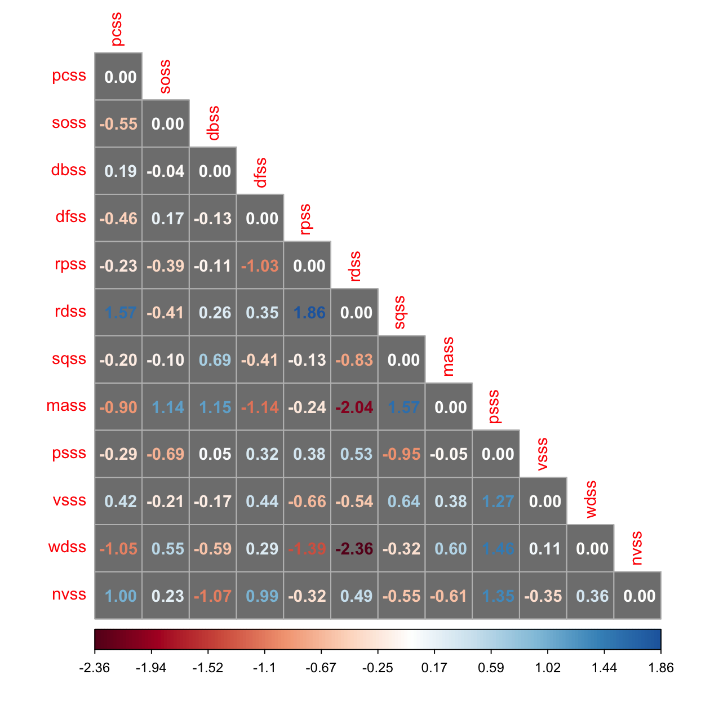
resid_cor <- residuals(fit_3f, "standardized.mplus")$cov[vars, vars]
corrplot(resid_cor, method = 'number', type = 'lower', is.corr = FALSE, bg = 'grey50')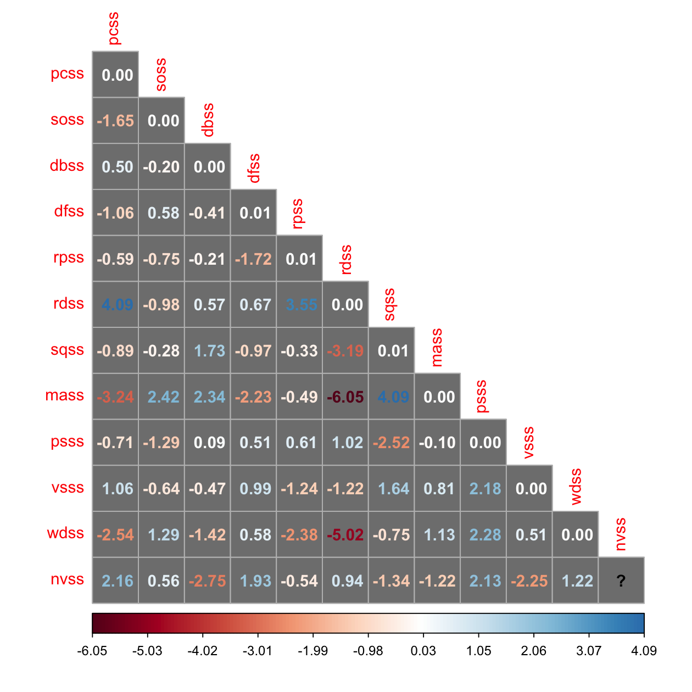
Word Definitions(wdss)와 Recall of Designs(rdss) 간의 상관에 대한 논의;
\(COV(\xi_1, \xi_2) = COV(aX_1, bX_2) = ab~COV(X_1, X_2)\)
# Keith's Table 16.4
resid_cor <- residuals(fit_3f, "cor")$cov[vars, vars]
corrplot(resid_cor, method = 'number', type = 'lower', is.corr = FALSE, bg = 'grey50')Hierarchical CFA model
First-order factors들에 대한 인과모형: 요인들 간의 관계를 설명
Second-order factors에 대한 indicators들: first order factors
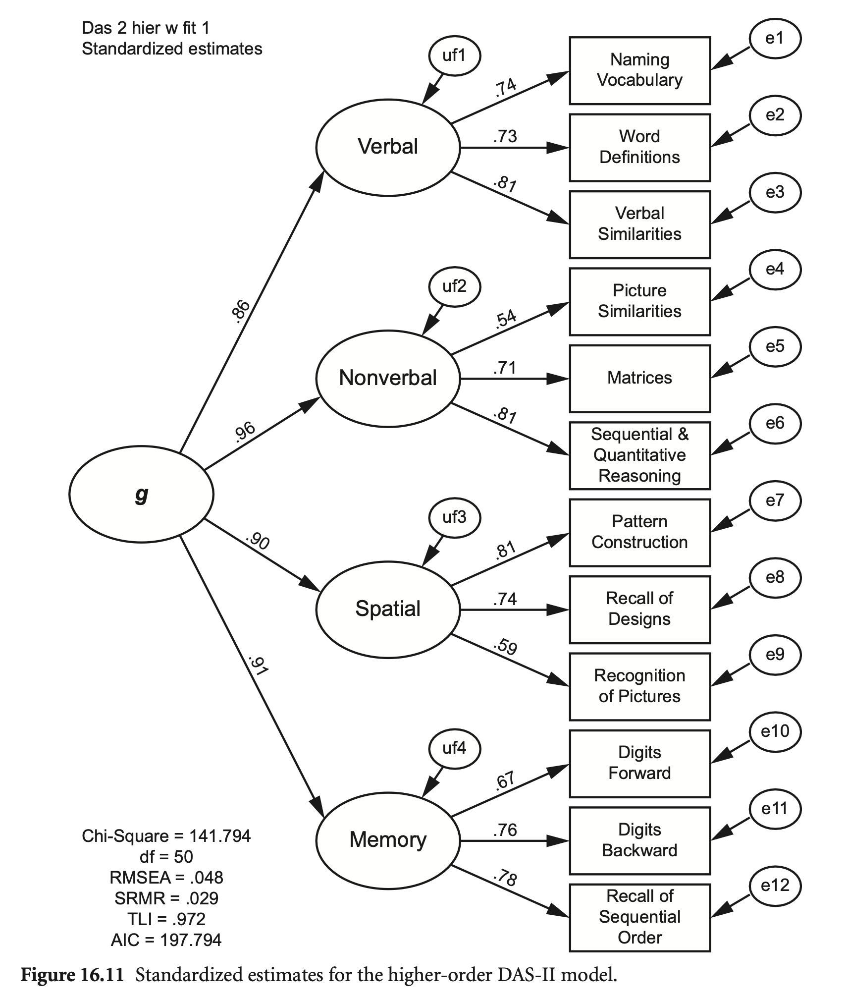
das2_model_higher <- "
Verbal =~ nvss + wdss + vsss
Nonverbal =~ psss + mass + sqss
Spatial =~ pcss + rdss + rpss
Memory =~ dfss + dbss + soss
G =~ Verbal + Nonverbal + Spatial + Memory
"
fit_higher <- sem(das2_model_higher, sample.cov = das2cov, sample.nobs = 800)
summary(fit_higher, standardized = TRUE, fit.measures = TRUE, rsquare = TRUE) |> print()lavaan 0.6-19 ended normally after 107 iterations
Estimator ML
Optimization method NLMINB
Number of model parameters 28
Number of observations 800
Model Test User Model:
Test statistic 141.972
Degrees of freedom 50
P-value (Chi-square) 0.000
Model Test Baseline Model:
Test statistic 4335.087
Degrees of freedom 66
P-value 0.000
User Model versus Baseline Model:
Comparative Fit Index (CFI) 0.978
Tucker-Lewis Index (TLI) 0.972
Loglikelihood and Information Criteria:
Loglikelihood user model (H0) -33715.560
Loglikelihood unrestricted model (H1) -33644.574
Akaike (AIC) 67487.120
Bayesian (BIC) 67618.289
Sample-size adjusted Bayesian (SABIC) 67529.374
Root Mean Square Error of Approximation:
RMSEA 0.048
90 Percent confidence interval - lower 0.039
90 Percent confidence interval - upper 0.057
P-value H_0: RMSEA <= 0.050 0.626
P-value H_0: RMSEA >= 0.080 0.000
Standardized Root Mean Square Residual:
SRMR 0.029
Parameter Estimates:
Standard errors Standard
Information Expected
Information saturated (h1) model Structured
Latent Variables:
Estimate Std.Err z-value P(>|z|) Std.lv Std.all
Verbal =~
nvss 1.000 7.474 0.740
wdss 0.937 0.049 19.183 0.000 7.000 0.730
vsss 1.100 0.053 20.914 0.000 8.223 0.807
Nonverbal =~
psss 1.000 5.558 0.540
mass 1.315 0.093 14.090 0.000 7.308 0.714
sqss 1.405 0.094 14.951 0.000 7.810 0.806
Spatial =~
pcss 1.000 7.506 0.815
rdss 0.983 0.047 20.993 0.000 7.378 0.738
rpss 0.790 0.049 16.285 0.000 5.933 0.588
Memory =~
dfss 1.000 7.344 0.665
dbss 1.047 0.058 17.904 0.000 7.690 0.758
soss 1.123 0.062 18.215 0.000 8.248 0.776
G =~
Verbal 1.000 0.858 0.858
Nonverbal 0.828 0.063 13.044 0.000 0.955 0.955
Spatial 1.057 0.060 17.475 0.000 0.903 0.903
Memory 1.046 0.069 15.141 0.000 0.913 0.913
Variances:
Estimate Std.Err z-value P(>|z|) Std.lv Std.all
.nvss 46.017 2.926 15.728 0.000 46.017 0.452
.wdss 42.890 2.682 15.990 0.000 42.890 0.467
.vsss 36.246 2.715 13.352 0.000 36.246 0.349
.psss 74.975 4.009 18.702 0.000 74.975 0.708
.mass 51.465 3.111 16.543 0.000 51.465 0.491
.sqss 32.880 2.488 13.213 0.000 32.880 0.350
.pcss 28.554 2.247 12.706 0.000 28.554 0.336
.rdss 45.447 2.888 15.738 0.000 45.447 0.455
.rpss 66.671 3.666 18.187 0.000 66.671 0.654
.dfss 67.912 3.927 17.293 0.000 67.912 0.557
.dbss 43.728 2.868 15.248 0.000 43.728 0.425
.soss 44.833 3.067 14.620 0.000 44.833 0.397
.Verbal 14.741 2.026 7.274 0.000 0.264 0.264
.Nonverbal 2.698 1.030 2.619 0.009 0.087 0.087
.Spatial 10.412 1.923 5.415 0.000 0.185 0.185
.Memory 8.941 1.826 4.897 0.000 0.166 0.166
G 41.114 4.197 9.797 0.000 1.000 1.000
R-Square:
Estimate
nvss 0.548
wdss 0.533
vsss 0.651
psss 0.292
mass 0.509
sqss 0.650
pcss 0.664
rdss 0.545
rpss 0.346
dfss 0.443
dbss 0.575
soss 0.603
Verbal 0.736
Nonverbal 0.913
Spatial 0.815
Memory 0.834
1차 모형과 고차 모형이 내포된 관계라고 볼 수 있으나, 일반적으로 통계적 검증보다는 이론적/실증적 근거가 필요
고차모형이 더 간결할 모형이나 통계적으로는 더 좋지 못한 결과
compareFit(fit, fit_higher) |> summary()################### Nested Model Comparison #########################
Chi-Squared Difference Test
Df AIC BIC Chisq Chisq diff RMSEA Df diff Pr(>Chisq)
fit 48 67477 67618 127.99
fit_higher 50 67487 67618 141.97 13.986 0.086552 2 0.0009183 ***
---
Signif. codes: 0 ‘***’ 0.001 ‘**’ 0.01 ‘*’ 0.05 ‘.’ 0.1 ‘ ’ 1
####################### Model Fit Indices ###########################
chisq df pvalue rmsea cfi tli srmr aic bic
fit 127.986† 48 .000 .046† .981† .974† .027† 67477.134† 67617.673†
fit_higher 141.972 50 .000 .048 .978 .972 .029 67487.120 67618.289
################## Differences in Fit Indices #######################
df rmsea cfi tli srmr aic bic
fit_higher - fit 2 0.002 -0.003 -0.003 0.003 9.986 0.617
Total effect
standardizedSolution(fit_higher) |> subset(op == "=~") |> print() lhs op rhs est.std se z pvalue ci.lower ci.upper
1 Verbal =~ nvss 0.740 0.020 37.089 0 0.701 0.780
2 Verbal =~ wdss 0.730 0.020 35.780 0 0.690 0.770
3 Verbal =~ vsss 0.807 0.017 46.773 0 0.773 0.841
4 Nonverbal =~ psss 0.540 0.028 19.326 0 0.485 0.595
5 Nonverbal =~ mass 0.714 0.021 34.116 0 0.673 0.755
6 Nonverbal =~ sqss 0.806 0.017 46.108 0 0.772 0.840
7 Spatial =~ pcss 0.815 0.017 47.124 0 0.781 0.849
8 Spatial =~ rdss 0.738 0.020 36.690 0 0.699 0.778
9 Spatial =~ rpss 0.588 0.026 22.257 0 0.536 0.640
10 Memory =~ dfss 0.665 0.023 28.727 0 0.620 0.711
11 Memory =~ dbss 0.758 0.019 39.560 0 0.721 0.796
12 Memory =~ soss 0.776 0.018 42.114 0 0.740 0.813
13 G =~ Verbal 0.858 0.018 47.282 0 0.822 0.894
14 G =~ Nonverbal 0.955 0.016 58.393 0 0.923 0.987
15 G =~ Spatial 0.903 0.017 52.367 0 0.869 0.937
16 G =~ Memory 0.913 0.017 54.992 0 0.881 0.946가령, G > Verbal > nvss, wdss, vsss에 대해서 총효과를 계산하면,
est <- standardizedSolution(fit_higher) |> subset(op == "=~") # loadings only
subset(est, lhs == "Verbal" | rhs == "Verbal") |> print() lhs op rhs est.std se z pvalue ci.lower ci.upper
1 Verbal =~ nvss 0.740 0.020 37.089 0 0.701 0.780
2 Verbal =~ wdss 0.730 0.020 35.780 0 0.690 0.770
3 Verbal =~ vsss 0.807 0.017 46.773 0 0.773 0.841
13 G =~ Verbal 0.858 0.018 47.282 0 0.822 0.894# G > Verbal
(subset(est, lhs == "Verbal")[, "est.std"] * subset(est, rhs == "Verbal")[, "est.std"]) |> print(digits = 2)[1] 0.64 0.63 0.69# G > Nonverbal
(subset(est, lhs == "Nonverbal")[, "est.std"] * subset(est, rhs == "Nonverbal")[, "est.std"]) |> print(digits = 2)[1] 0.52 0.68 0.77# G > Spatial
(subset(est, lhs == "Spatial")[, "est.std"] * subset(est, rhs == "Spatial")[, "est.std"]) |> print(digits = 2)[1] 0.74 0.67 0.53# G > Memory
(subset(est, lhs == "Memory")[, "est.std"] * subset(est, rhs == "Memory")[, "est.std"]) |> print(digits = 2)[1] 0.61 0.69 0.71semPlot::semPaths(fit_higher, what = "est", edge.label.cex = .8, fade = FALSE)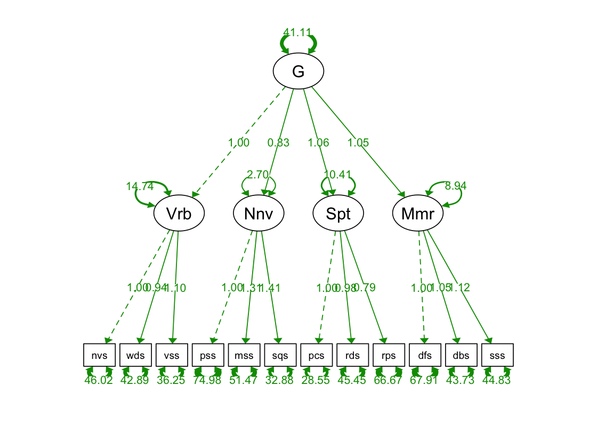
또는 Nested-factor models, general-specific models
이 두 모델은 또한 지능의 본질에 대해 상당히 다른 이론을 암시합니다. 고차 모형에 따르면 12가지 테스트가 서로 상관관계가 있는 주된 이유는 네 가지 기본 인지 능력을 측정하기 때문이며, g는 이러한 광범위한 인지 능력에 영향을 미치고 g는 특정 테스트에 간접적으로만 영향을 미친다고 합니다. 반면 이중 요인 모델에서는 이 12가지 검사 간의 상관 관계에는 두 가지 이유가 있다고 말합니다. 첫째, 이들 검사는 모두 G를 측정하고 둘째, 이들 검사는 모두 서로 독립적인 다른 광범위한 인지능력을 측정하기 때문입니다. 이중 요인 모델에서 G는 구체적인 테스트에 직접적인 영향을 미칩니다. 따라서 고차 모델에서 g는 그 기반이 되는 광범위한 인지 능력의 특성으로 이해할 수 있으며, 이러한 인지 능력은 g와 어느 정도 관련이 있는 것으로 이해할 수 있습니다. 이원 요인 모델에서는 G의 특성은 구체적인 테스트로 직접 레퍼런스 할 수 있습니다. (p. 424)
Translated with DeepL.com (free version)
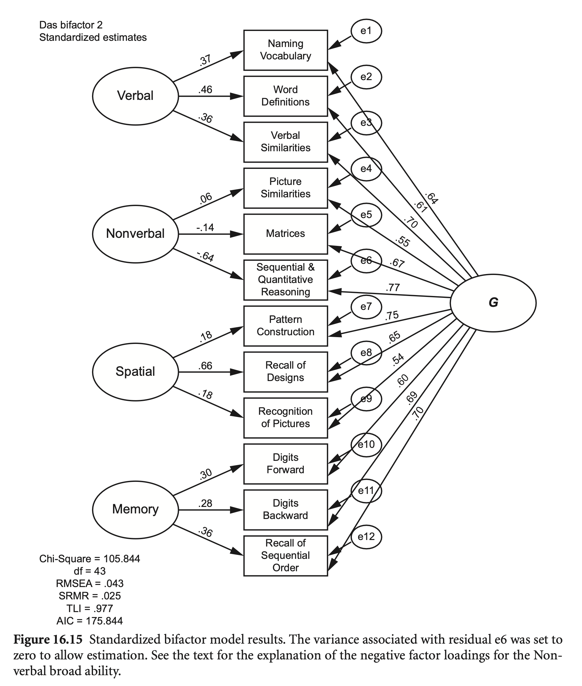
das2_model_bifactor <- "
Verbal =~ nvss + wdss + vsss
Nonverbal =~ psss + mass + sqss
Spatial =~ pcss + rdss + rpss
Memory =~ dfss + dbss + soss
G =~ nvss + wdss + vsss + psss + mass + sqss + pcss + rdss + rpss + dfss + dbss + soss
mass ~~ 0*mass
# orthogonal factors (uncorrelated factors)
Verbal ~~ 0*Nonverbal
Verbal ~~ 0*Spatial
Verbal ~~ 0*Memory
Nonverbal ~~ 0*Spatial
Nonverbal ~~ 0*Memory
Spatial ~~ 0*Memory
G ~~ 0*Verbal
G ~~ 0*Nonverbal
G ~~ 0*Spatial
G ~~ 0*Memory
"
fit_bif <- sem(das2_model_bifactor, sample.cov = das2cov, sample.nobs = 800)
# 위에서처럼 orthogonal factor로 직접 설정하거나 다름와 같이 옵션으로 설정
fit_bif <- sem(das2_model_bifactor, sample.cov = das2cov, sample.nobs = 800,
auto.cov.lv.x = FALSE) # uncorrelated factors
summary(fit_bif, standardized = TRUE, fit.measures = TRUE) |> print()lavaan 0.6-19 ended normally after 769 iterations
Estimator ML
Optimization method NLMINB
Number of model parameters 35
Number of observations 800
Model Test User Model:
Test statistic 108.487
Degrees of freedom 43
P-value (Chi-square) 0.000
Model Test Baseline Model:
Test statistic 4335.087
Degrees of freedom 66
P-value 0.000
User Model versus Baseline Model:
Comparative Fit Index (CFI) 0.985
Tucker-Lewis Index (TLI) 0.976
Loglikelihood and Information Criteria:
Loglikelihood user model (H0) -33698.817
Loglikelihood unrestricted model (H1) -33644.574
Akaike (AIC) 67467.635
Bayesian (BIC) 67631.596
Sample-size adjusted Bayesian (SABIC) 67520.452
Root Mean Square Error of Approximation:
RMSEA 0.044
90 Percent confidence interval - lower 0.033
90 Percent confidence interval - upper 0.054
P-value H_0: RMSEA <= 0.050 0.839
P-value H_0: RMSEA >= 0.080 0.000
Standardized Root Mean Square Residual:
SRMR 0.025
Parameter Estimates:
Standard errors Standard
Information Expected
Information saturated (h1) model Structured
Latent Variables:
Estimate Std.Err z-value P(>|z|) Std.lv Std.all
Verbal =~
nvss 1.000 3.673 0.364
wdss 1.189 0.210 5.661 0.000 4.368 0.456
vsss 0.999 0.162 6.159 0.000 3.668 0.360
Nonverbal =~
psss 1.000 0.109 0.011
mass 70.327 219.185 0.321 0.748 7.641 0.746
sqss 11.347 35.167 0.323 0.747 1.233 0.127
Spatial =~
pcss 1.000 1.686 0.183
rdss 3.889 2.449 1.588 0.112 6.558 0.656
rpss 1.110 0.273 4.070 0.000 1.872 0.185
Memory =~
dfss 1.000 3.289 0.298
dbss 0.837 0.227 3.686 0.000 2.752 0.271
soss 1.136 0.350 3.247 0.001 3.735 0.352
G =~
nvss 1.000 6.481 0.642
wdss 0.902 0.052 17.389 0.000 5.846 0.610
vsss 1.106 0.058 19.161 0.000 7.168 0.703
psss 0.863 0.065 13.335 0.000 5.591 0.543
mass 1.052 0.067 15.680 0.000 6.818 0.666
sqss 1.143 0.065 17.587 0.000 7.408 0.765
pcss 1.064 0.062 17.301 0.000 6.896 0.748
rdss 1.004 0.065 15.458 0.000 6.507 0.651
rpss 0.846 0.064 13.239 0.000 5.481 0.543
dfss 1.026 0.071 14.479 0.000 6.648 0.602
dbss 1.088 0.067 16.313 0.000 7.051 0.695
soss 1.152 0.070 16.457 0.000 7.466 0.703
Covariances:
Estimate Std.Err z-value P(>|z|) Std.lv Std.all
Verbal ~~
Nonverbal 0.000 0.000 0.000
Spatial 0.000 0.000 0.000
Memory 0.000 0.000 0.000
Nonverbal ~~
Spatial 0.000 0.000 0.000
Memory 0.000 0.000 0.000
Spatial ~~
Memory 0.000 0.000 0.000
Verbal ~~
G 0.000 0.000 0.000
Nonverbal ~~
G 0.000 0.000 0.000
Spatial ~~
G 0.000 0.000 0.000
Memory ~~
G 0.000 0.000 0.000
Variances:
Estimate Std.Err z-value P(>|z|) Std.lv Std.all
.mass 0.000 0.000 0.000
.nvss 46.382 3.255 14.248 0.000 46.382 0.455
.wdss 38.625 3.797 10.172 0.000 38.625 0.420
.vsss 39.039 3.016 12.945 0.000 39.039 0.376
.psss 74.591 3.972 18.778 0.000 74.591 0.705
.sqss 37.487 2.240 16.737 0.000 37.487 0.399
.pcss 34.500 2.494 13.834 0.000 34.500 0.406
.rdss 14.524 26.056 0.557 0.577 14.524 0.145
.rpss 68.332 3.954 17.282 0.000 68.332 0.671
.dfss 66.827 4.711 14.186 0.000 66.827 0.548
.dbss 45.581 3.270 13.938 0.000 45.581 0.443
.soss 43.167 4.798 8.998 0.000 43.167 0.382
Verbal 13.491 3.298 4.091 0.000 1.000 1.000
Nonverbal 0.012 0.074 0.160 0.873 1.000 1.000
Spatial 2.844 1.991 1.428 0.153 1.000 1.000
Memory 10.820 4.345 2.490 0.013 1.000 1.000
G 41.999 4.389 9.569 0.000 1.000 1.000
mass에 대한 variance가 음수가 되어 mass ~~ 0*mass으로 설정했음.
inspect(fit_bif, what = "est") |> print()$lambda
Verbal Nnvrbl Spatil Memory G
nvss 1.000 0.000 0.000 0.000 1.000
wdss 1.189 0.000 0.000 0.000 0.902
vsss 0.999 0.000 0.000 0.000 1.106
psss 0.000 1.000 0.000 0.000 0.863
mass 0.000 70.327 0.000 0.000 1.052
sqss 0.000 11.347 0.000 0.000 1.143
pcss 0.000 0.000 1.000 0.000 1.064
rdss 0.000 0.000 3.889 0.000 1.004
rpss 0.000 0.000 1.110 0.000 0.846
dfss 0.000 0.000 0.000 1.000 1.026
dbss 0.000 0.000 0.000 0.837 1.088
soss 0.000 0.000 0.000 1.136 1.152
$theta
nvss wdss vsss psss mass sqss pcss rdss rpss dfss dbss soss
nvss 46.382
wdss 0.000 38.625
vsss 0.000 0.000 39.039
psss 0.000 0.000 0.000 74.591
mass 0.000 0.000 0.000 0.000 0.000
sqss 0.000 0.000 0.000 0.000 0.000 37.487
pcss 0.000 0.000 0.000 0.000 0.000 0.000 34.500
rdss 0.000 0.000 0.000 0.000 0.000 0.000 0.000 14.524
rpss 0.000 0.000 0.000 0.000 0.000 0.000 0.000 0.000 68.332
dfss 0.000 0.000 0.000 0.000 0.000 0.000 0.000 0.000 0.000 66.827
dbss 0.000 0.000 0.000 0.000 0.000 0.000 0.000 0.000 0.000 0.000 45.581
soss 0.000 0.000 0.000 0.000 0.000 0.000 0.000 0.000 0.000 0.000 0.000 43.167
$psi
Verbal Nnvrbl Spatil Memory G
Verbal 13.491
Nonverbal 0.000 0.012
Spatial 0.000 0.000 2.844
Memory 0.000 0.000 0.000 10.820
G 0.000 0.000 0.000 0.000 41.999
parameterTable(fit_bif) |> print() id lhs op rhs user block group free ustart exo label plabel start est se
1 1 Verbal =~ nvss 1 1 1 0 1 0 .p1. 1.000 1.000 0.000
2 2 Verbal =~ wdss 1 1 1 1 NA 0 .p2. 0.967 1.189 0.210
3 3 Verbal =~ vsss 1 1 1 2 NA 0 .p3. 1.074 0.999 0.162
4 4 Nonverbal =~ psss 1 1 1 0 1 0 .p4. 1.000 1.000 0.000
5 5 Nonverbal =~ mass 1 1 1 3 NA 0 .p5. 1.538 70.327 219.185
6 6 Nonverbal =~ sqss 1 1 1 4 NA 0 .p6. 1.538 11.347 35.167
7 7 Spatial =~ pcss 1 1 1 0 1 0 .p7. 1.000 1.000 0.000
8 8 Spatial =~ rdss 1 1 1 5 NA 0 .p8. 1.171 3.889 2.449
9 9 Spatial =~ rpss 1 1 1 6 NA 0 .p9. 0.857 1.110 0.273
10 10 Memory =~ dfss 1 1 1 0 1 0 .p10. 1.000 1.000 0.000
11 11 Memory =~ dbss 1 1 1 7 NA 0 .p11. 1.016 0.837 0.227
12 12 Memory =~ soss 1 1 1 8 NA 0 .p12. 1.125 1.136 0.350
13 13 G =~ nvss 1 1 1 0 1 0 .p13. 1.000 1.000 0.000
14 14 G =~ wdss 1 1 1 9 NA 0 .p14. 0.905 0.902 0.052
15 15 G =~ vsss 1 1 1 10 NA 0 .p15. 1.056 1.106 0.058
16 16 G =~ psss 1 1 1 11 NA 0 .p16. 0.737 0.863 0.065
17 17 G =~ mass 1 1 1 12 NA 0 .p17. 0.852 1.052 0.067
18 18 G =~ sqss 1 1 1 13 NA 0 .p18. 0.923 1.143 0.065
19 19 G =~ pcss 1 1 1 14 NA 0 .p19. 0.868 1.064 0.062
20 20 G =~ rdss 1 1 1 15 NA 0 .p20. 0.828 1.004 0.065
21 21 G =~ rpss 1 1 1 16 NA 0 .p21. 0.676 0.846 0.064
22 22 G =~ dfss 1 1 1 17 NA 0 .p22. 0.914 1.026 0.071
23 23 G =~ dbss 1 1 1 18 NA 0 .p23. 0.922 1.088 0.067
24 24 G =~ soss 1 1 1 19 NA 0 .p24. 0.989 1.152 0.070
25 25 mass ~~ mass 1 1 1 0 0 0 .p25. 0.000 0.000 0.000
26 26 Verbal ~~ Nonverbal 1 1 1 0 0 0 .p26. 0.000 0.000 0.000
27 27 Verbal ~~ Spatial 1 1 1 0 0 0 .p27. 0.000 0.000 0.000
28 28 Verbal ~~ Memory 1 1 1 0 0 0 .p28. 0.000 0.000 0.000
29 29 Nonverbal ~~ Spatial 1 1 1 0 0 0 .p29. 0.000 0.000 0.000
30 30 Nonverbal ~~ Memory 1 1 1 0 0 0 .p30. 0.000 0.000 0.000
31 31 Spatial ~~ Memory 1 1 1 0 0 0 .p31. 0.000 0.000 0.000
32 32 Verbal ~~ G 1 1 1 0 0 0 .p32. 0.000 0.000 0.000
33 33 Nonverbal ~~ G 1 1 1 0 0 0 .p33. 0.000 0.000 0.000
34 34 Spatial ~~ G 1 1 1 0 0 0 .p34. 0.000 0.000 0.000
35 35 Memory ~~ G 1 1 1 0 0 0 .p35. 0.000 0.000 0.000
36 36 nvss ~~ nvss 0 1 1 20 NA 0 .p36. 50.936 46.382 3.255
37 37 wdss ~~ wdss 0 1 1 21 NA 0 .p37. 45.943 38.625 3.797
38 38 vsss ~~ vsss 0 1 1 22 NA 0 .p38. 51.935 39.039 3.016
39 39 psss ~~ psss 0 1 1 23 NA 0 .p39. 52.934 74.591 3.972
40 40 sqss ~~ sqss 0 1 1 24 NA 0 .p40. 46.941 37.487 2.240
41 41 pcss ~~ pcss 0 1 1 25 NA 0 .p41. 42.447 34.500 2.494
42 42 rdss ~~ rdss 0 1 1 26 NA 0 .p42. 49.938 14.524 26.056
43 43 rpss ~~ rpss 0 1 1 27 NA 0 .p43. 50.936 68.332 3.954
44 44 dfss ~~ dfss 0 1 1 28 NA 0 .p44. 60.924 66.827 4.711
45 45 dbss ~~ dbss 0 1 1 29 NA 0 .p45. 51.436 45.581 3.270
46 46 soss ~~ soss 0 1 1 30 NA 0 .p46. 56.429 43.167 4.798
47 47 Verbal ~~ Verbal 0 1 1 31 NA 0 .p47. 0.050 13.491 3.298
48 48 Nonverbal ~~ Nonverbal 0 1 1 32 NA 0 .p48. 0.050 0.012 0.074
49 49 Spatial ~~ Spatial 0 1 1 33 NA 0 .p49. 0.050 2.844 1.991
50 50 Memory ~~ Memory 0 1 1 34 NA 0 .p50. 0.050 10.820 4.345
51 51 G ~~ G 0 1 1 35 NA 0 .p51. 0.050 41.999 4.389Reliability (신뢰도): \(\displaystyle \rho = \frac{V_{\text{True}}}{V_{\text{Observed}}} = \frac{V_{\text{True}}}{V_{\text{True}} + V_{\text{Error}}}\)
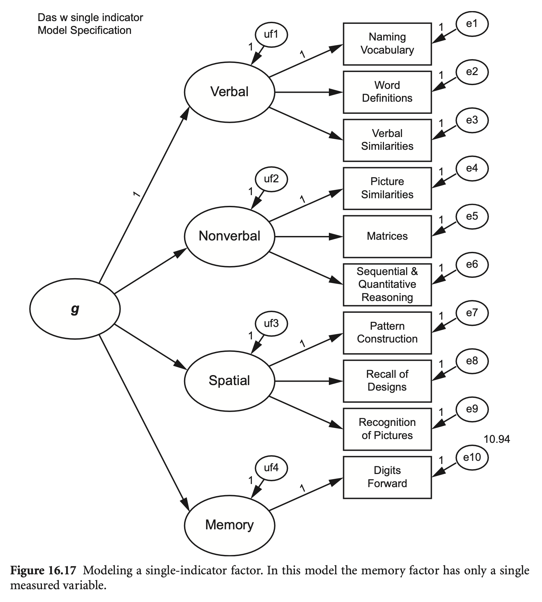
위에서 계산한 신뢰도로 모형을 구성하면; dfss ~~ 10.94*dfss
das2_model_single <- "
Verbal =~ nvss + wdss + vsss
Nonverbal =~ psss + mass + sqss
Spatial =~ pcss + rdss + rpss
Memory =~ 1*dfss
G =~ Verbal + Nonverbal + Spatial + Memory
dfss ~~ 10.94*dfss
"
fit_single <- sem(das2_model_single, sample.cov = das2cov, sample.nobs = 800)
summary(fit_single, fit.measures = TRUE, standardized = TRUE) |> print()lavaan 0.6-19 ended normally after 114 iterations
Estimator ML
Optimization method NLMINB
Number of model parameters 23
Number of observations 800
Model Test User Model:
Test statistic 115.280
Degrees of freedom 32
P-value (Chi-square) 0.000
Model Test Baseline Model:
Test statistic 3295.596
Degrees of freedom 45
P-value 0.000
User Model versus Baseline Model:
Comparative Fit Index (CFI) 0.974
Tucker-Lewis Index (TLI) 0.964
Loglikelihood and Information Criteria:
Loglikelihood user model (H0) -28207.812
Loglikelihood unrestricted model (H1) -28150.172
Akaike (AIC) 56461.624
Bayesian (BIC) 56569.370
Sample-size adjusted Bayesian (SABIC) 56496.332
Root Mean Square Error of Approximation:
RMSEA 0.057
90 Percent confidence interval - lower 0.046
90 Percent confidence interval - upper 0.068
P-value H_0: RMSEA <= 0.050 0.142
P-value H_0: RMSEA >= 0.080 0.000
Standardized Root Mean Square Residual:
SRMR 0.032
Parameter Estimates:
Standard errors Standard
Information Expected
Information saturated (h1) model Structured
Latent Variables:
Estimate Std.Err z-value P(>|z|) Std.lv Std.all
Verbal =~
nvss 1.000 7.501 0.743
wdss 0.928 0.049 19.010 0.000 6.961 0.726
vsss 1.097 0.053 20.784 0.000 8.231 0.808
Nonverbal =~
psss 1.000 5.631 0.547
mass 1.277 0.091 14.001 0.000 7.193 0.702
sqss 1.394 0.093 15.001 0.000 7.852 0.810
Spatial =~
pcss 1.000 7.523 0.817
rdss 0.979 0.047 20.818 0.000 7.365 0.737
rpss 0.787 0.049 16.184 0.000 5.920 0.586
Memory =~
dfss 1.000 10.531 0.954
G =~
Verbal 1.000 0.850 0.850
Nonverbal 0.843 0.066 12.848 0.000 0.954 0.954
Spatial 1.077 0.063 17.075 0.000 0.913 0.913
Memory 1.041 0.072 14.514 0.000 0.630 0.630
Variances:
Estimate Std.Err z-value P(>|z|) Std.lv Std.all
.dfss 10.940 10.940 0.090
.nvss 45.604 2.946 15.477 0.000 45.604 0.448
.wdss 43.432 2.727 15.929 0.000 43.432 0.473
.vsss 36.113 2.763 13.071 0.000 36.113 0.348
.psss 74.154 4.003 18.523 0.000 74.154 0.700
.mass 53.124 3.218 16.507 0.000 53.124 0.507
.sqss 32.224 2.567 12.553 0.000 32.224 0.343
.pcss 28.291 2.272 12.450 0.000 28.291 0.333
.rdss 45.637 2.914 15.660 0.000 45.637 0.457
.rpss 66.831 3.682 18.150 0.000 66.831 0.656
.Verbal 15.610 2.179 7.163 0.000 0.277 0.277
.Nonverbal 2.832 1.169 2.423 0.015 0.089 0.089
.Spatial 9.412 2.049 4.593 0.000 0.166 0.166
.Memory 66.832 4.289 15.582 0.000 0.603 0.603
G 40.659 4.231 9.609 0.000 1.000 1.000
잠재변수 없이 지표변수만으로 모형을 구성하면,
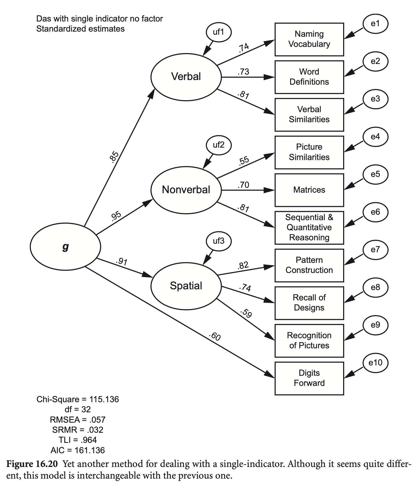
das2_model_single2 <- "
Verbal =~ nvss + wdss + vsss
Nonverbal =~ psss + mass + sqss
Spatial =~ pcss + rdss + rpss
G =~ Verbal + Nonverbal + Spatial + dfss
"
fit_single2 <- sem(das2_model_single2, sample.cov = das2cov, sample.nobs = 800)
summary(fit_single2, fit.measures = TRUE, standardized = TRUE) |> print()lavaan 0.6-19 ended normally after 99 iterations
Estimator ML
Optimization method NLMINB
Number of model parameters 23
Number of observations 800
Model Test User Model:
Test statistic 115.280
Degrees of freedom 32
P-value (Chi-square) 0.000
Model Test Baseline Model:
Test statistic 3295.596
Degrees of freedom 45
P-value 0.000
User Model versus Baseline Model:
Comparative Fit Index (CFI) 0.974
Tucker-Lewis Index (TLI) 0.964
Loglikelihood and Information Criteria:
Loglikelihood user model (H0) -28207.812
Loglikelihood unrestricted model (H1) -28150.172
Akaike (AIC) 56461.624
Bayesian (BIC) 56569.370
Sample-size adjusted Bayesian (SABIC) 56496.332
Root Mean Square Error of Approximation:
RMSEA 0.057
90 Percent confidence interval - lower 0.046
90 Percent confidence interval - upper 0.068
P-value H_0: RMSEA <= 0.050 0.142
P-value H_0: RMSEA >= 0.080 0.000
Standardized Root Mean Square Residual:
SRMR 0.032
Parameter Estimates:
Standard errors Standard
Information Expected
Information saturated (h1) model Structured
Latent Variables:
Estimate Std.Err z-value P(>|z|) Std.lv Std.all
Verbal =~
nvss 1.000 7.501 0.743
wdss 0.928 0.049 19.010 0.000 6.961 0.726
vsss 1.097 0.053 20.784 0.000 8.231 0.808
Nonverbal =~
psss 1.000 5.631 0.547
mass 1.277 0.091 14.001 0.000 7.193 0.702
sqss 1.394 0.093 15.001 0.000 7.852 0.810
Spatial =~
pcss 1.000 7.523 0.817
rdss 0.979 0.047 20.818 0.000 7.365 0.737
rpss 0.787 0.049 16.184 0.000 5.920 0.586
G =~
Verbal 1.000 0.850 0.850
Nonverbal 0.843 0.066 12.848 0.000 0.954 0.954
Spatial 1.077 0.063 17.075 0.000 0.913 0.913
dfss 1.041 0.072 14.514 0.000 6.639 0.601
Variances:
Estimate Std.Err z-value P(>|z|) Std.lv Std.all
.nvss 45.604 2.946 15.477 0.000 45.604 0.448
.wdss 43.432 2.727 15.929 0.000 43.432 0.473
.vsss 36.113 2.763 13.071 0.000 36.113 0.348
.psss 74.154 4.003 18.523 0.000 74.154 0.700
.mass 53.124 3.218 16.507 0.000 53.124 0.507
.sqss 32.224 2.567 12.553 0.000 32.224 0.343
.pcss 28.291 2.272 12.450 0.000 28.291 0.333
.rdss 45.637 2.914 15.660 0.000 45.637 0.457
.rpss 66.831 3.682 18.150 0.000 66.831 0.656
.dfss 77.772 4.289 18.133 0.000 77.772 0.638
.Verbal 15.610 2.179 7.163 0.000 0.277 0.277
.Nonverbal 2.832 1.169 2.423 0.015 0.089 0.089
.Spatial 9.412 2.049 4.593 0.000 0.166 0.166
G 40.659 4.231 9.609 0.000 1.000 1.000